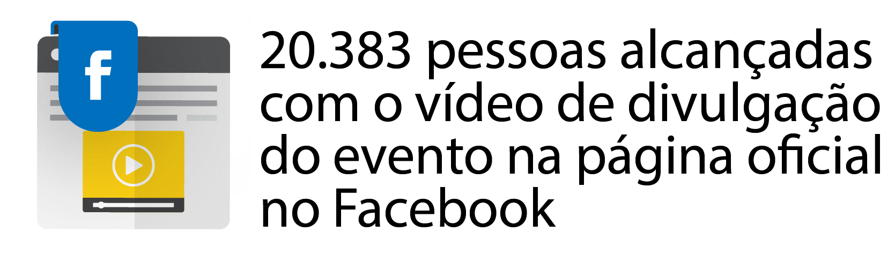

e-TIC 2017
Durante os 3 dias do evento, mais de 1300 pessoas participaram de atividades distintas como palestras, minicursos, mesas redondas, campeonatos de e-Sposts e maratonas de desenvolvimento.
O vídeo de divulgação em nossa página no Facebook alcançaou mais de 20 mil pessoas, gerando repercusão nacional e reconhecimento do evento em outras instituições de ensino pelo país.
Além dos participantes terem a oportunidade de aprender com nossos palestrantes, empresas de tecnologia e das mais variadas áreas marcaram presença no evento, assistindo aos projetos apresentados no Hackathon e contribuindo com a construção do evento.
Por último mas não menos importantes, mais de 50 instituições de ensino e pesquisa participaram do evento, mostrando que o VII eTIC foi um evento que beneficiou as mais diversar áreas, com oportunidades de aprendizado, empresariais e acadêmicas.